Embroidery
Bright, vibrant pop art and wall art. Original paintings and artwork by UK artist Penny Tristram.
Landscape with Red Kites for the National Library of Wales and Celf ar Y Cyd.
At the beginning of 2025, the National Library of Wales commissioned three textile artists working in Wales today to respond to works from the national collection. Penny Tristram was inspired by Short's Y Brain / The Crows, and the relationship between painting and embroidery in her practice. Read the interview.
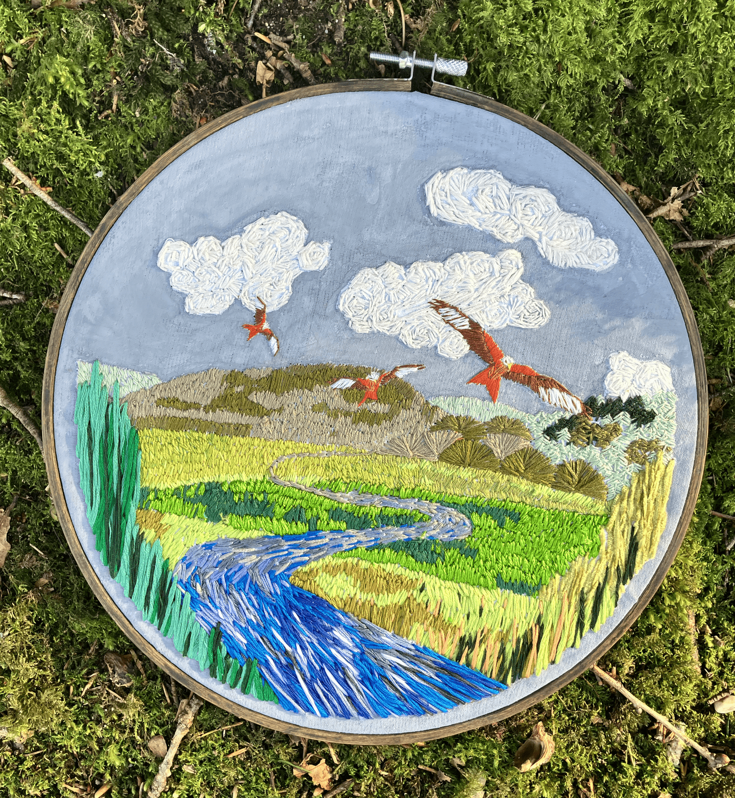
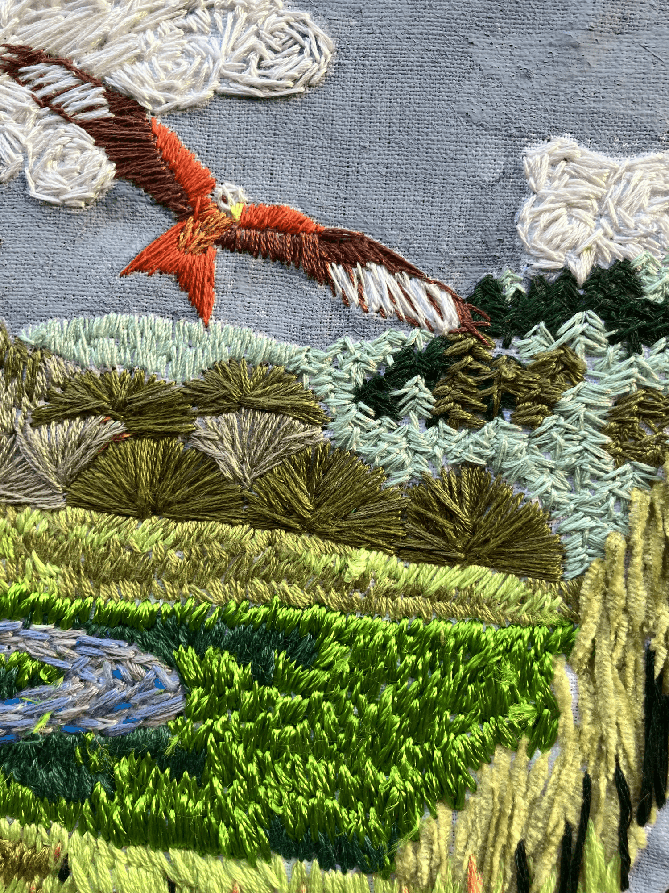
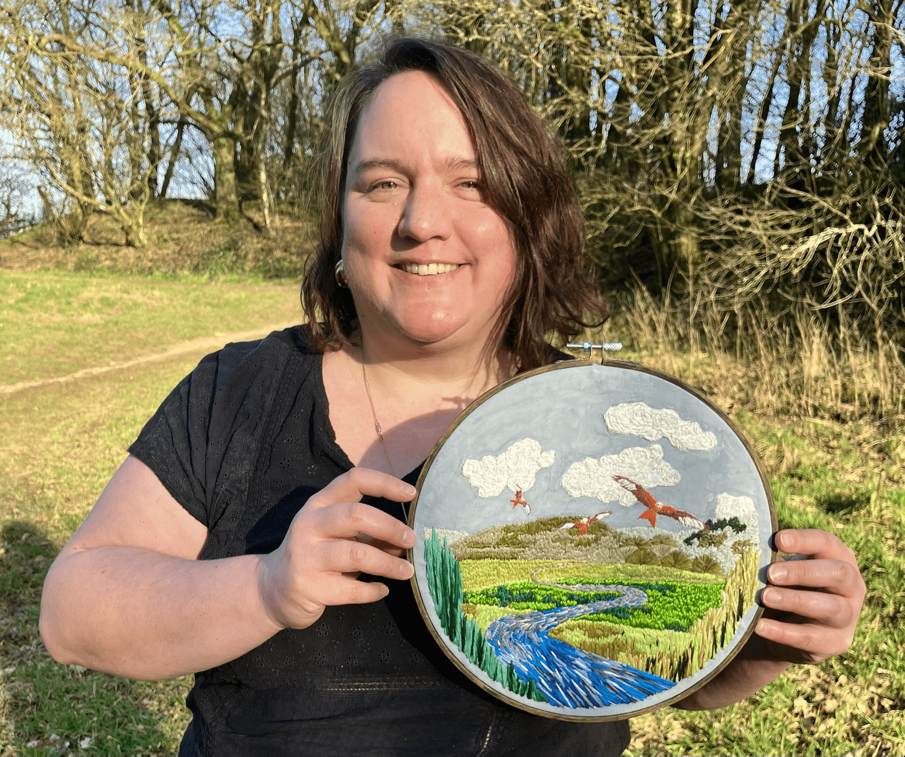
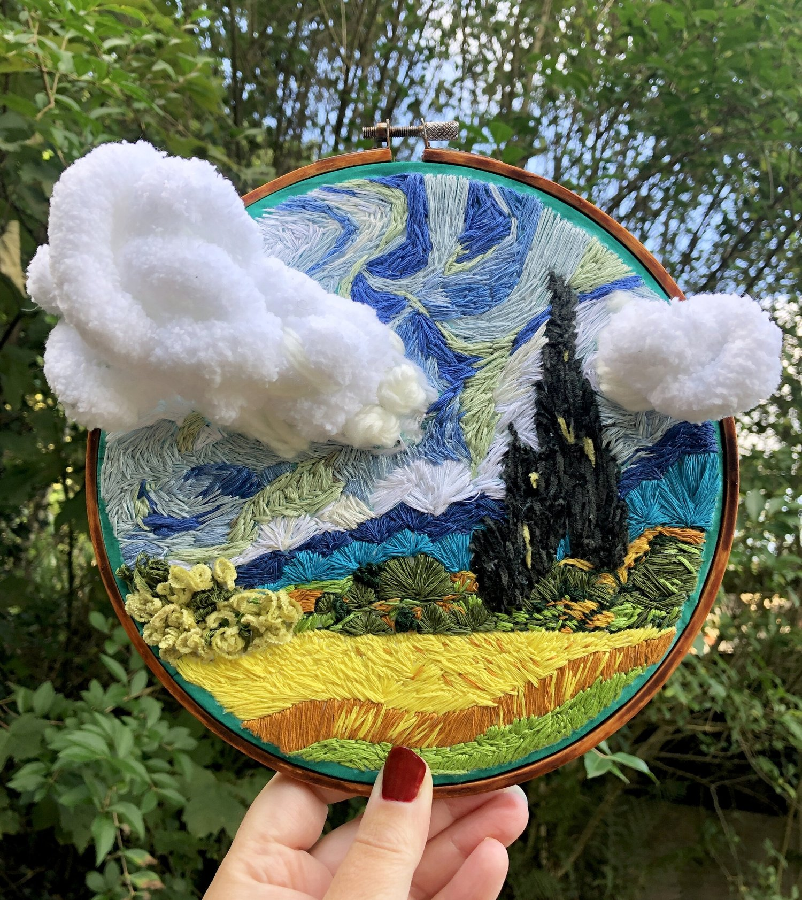
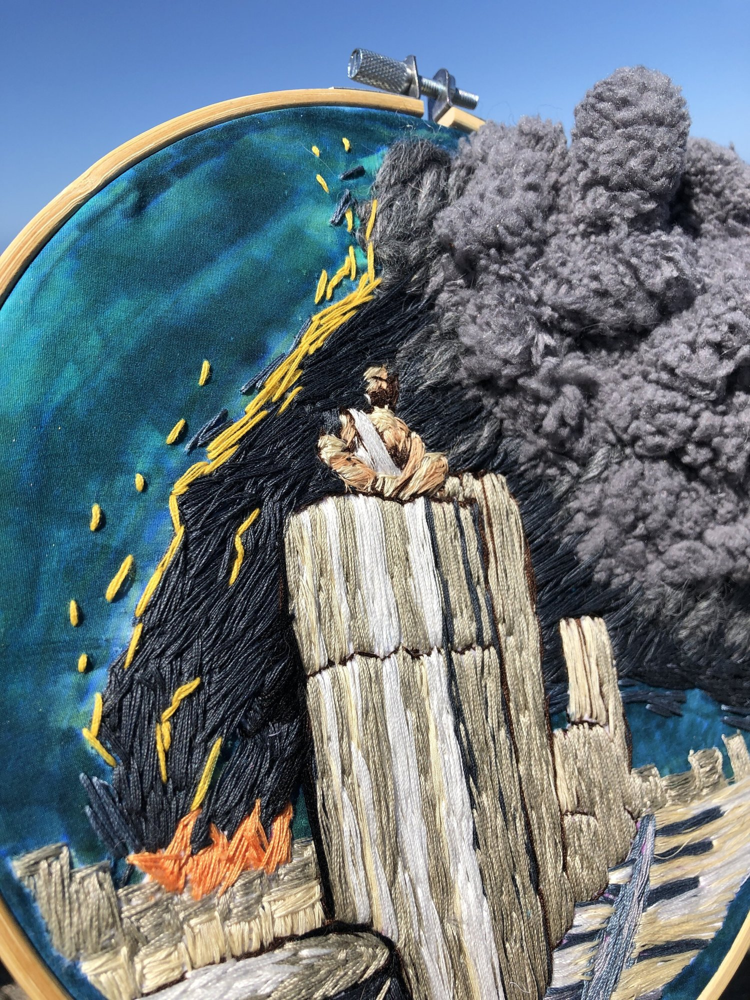
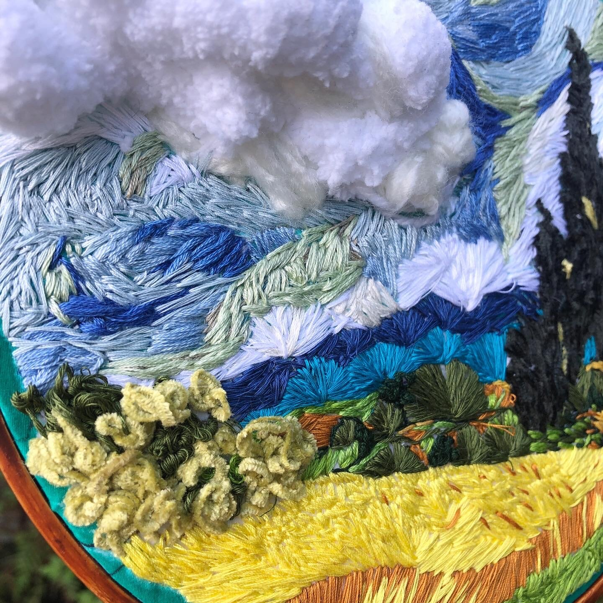
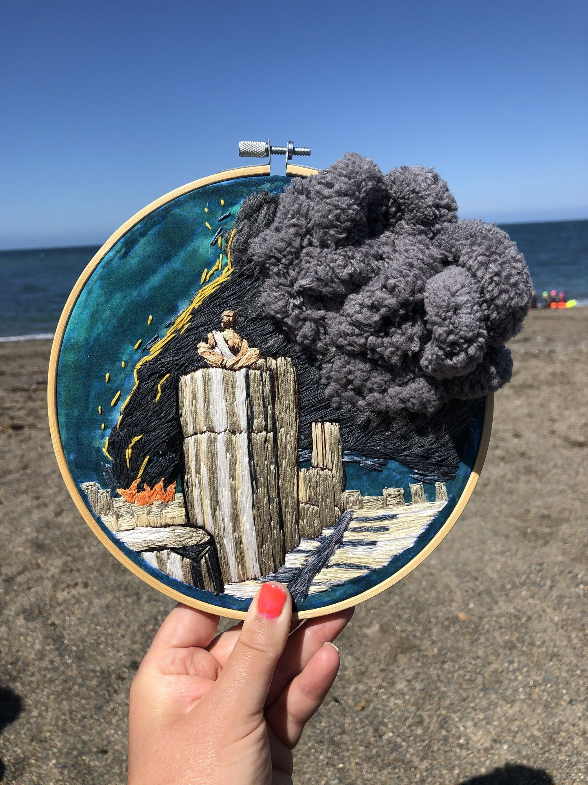
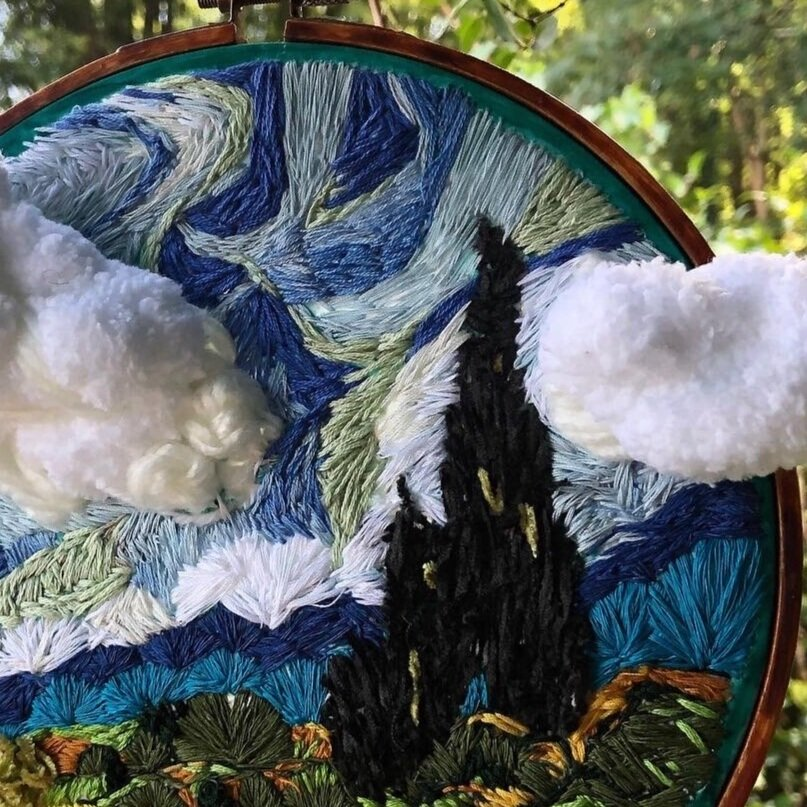
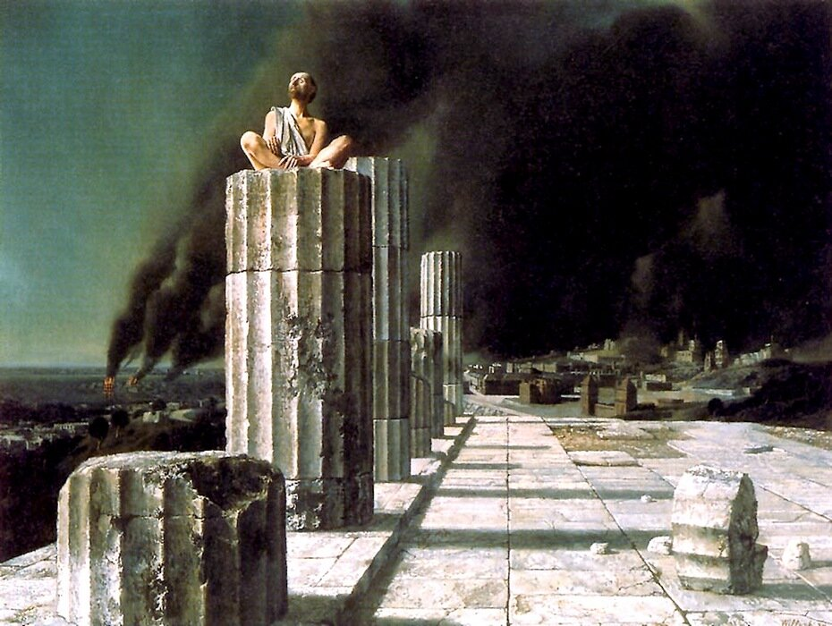
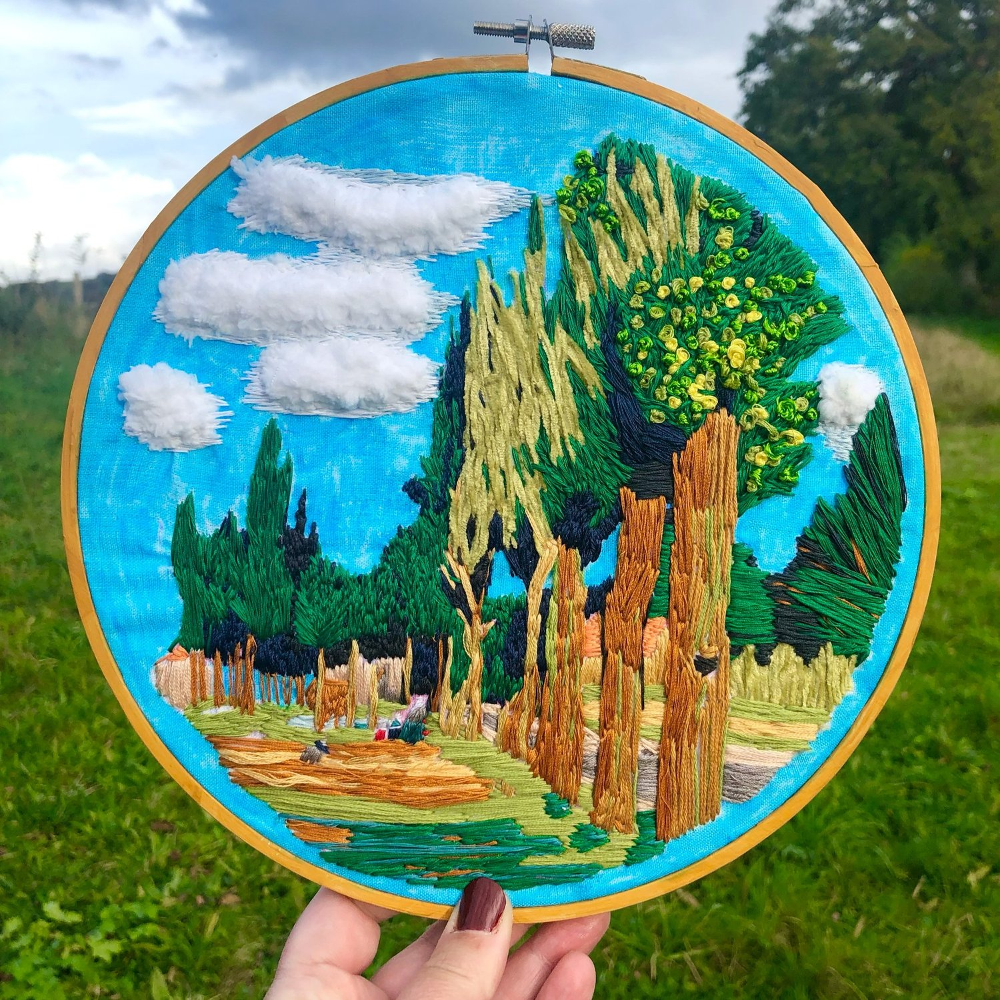
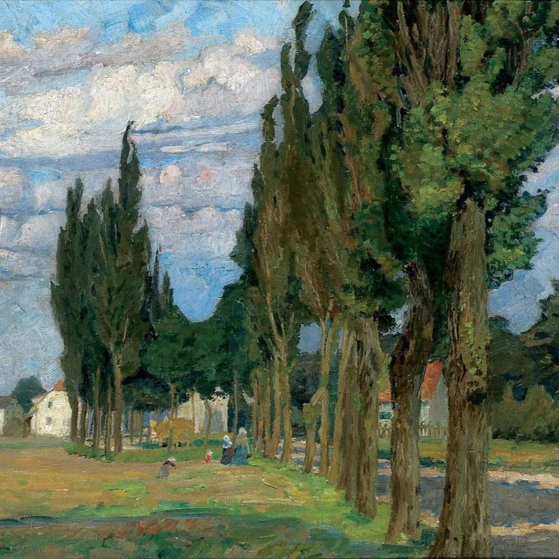
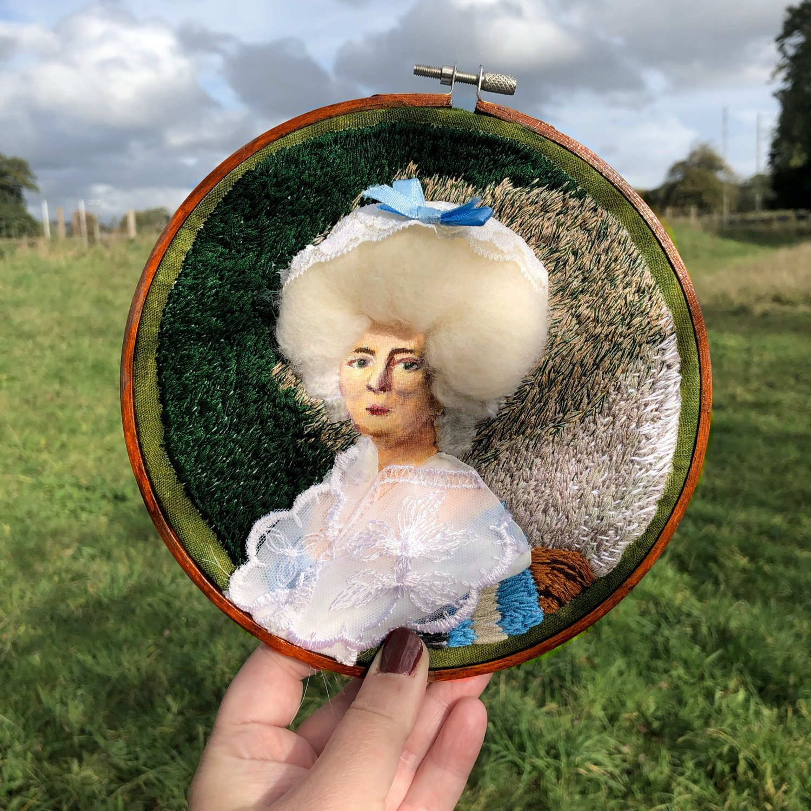
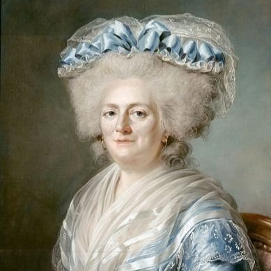